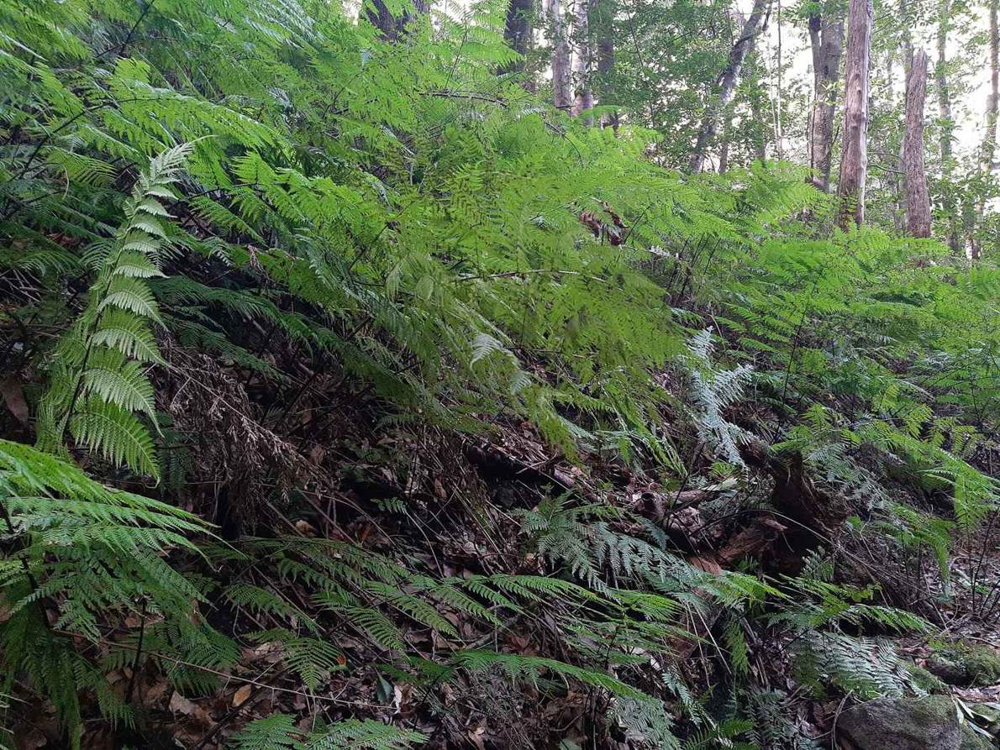
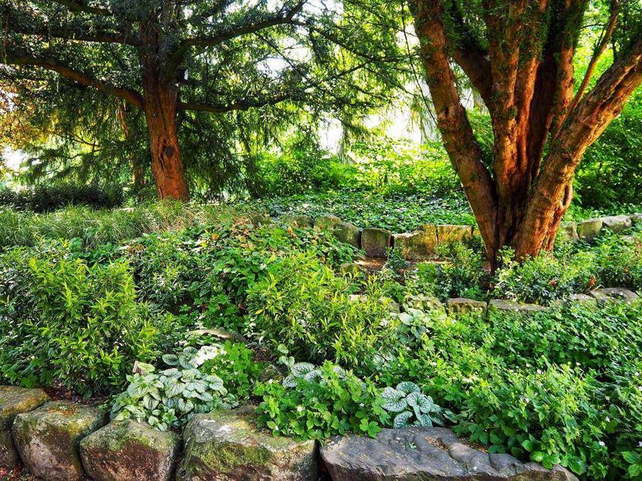
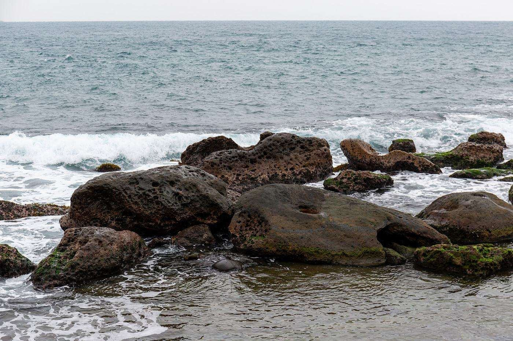
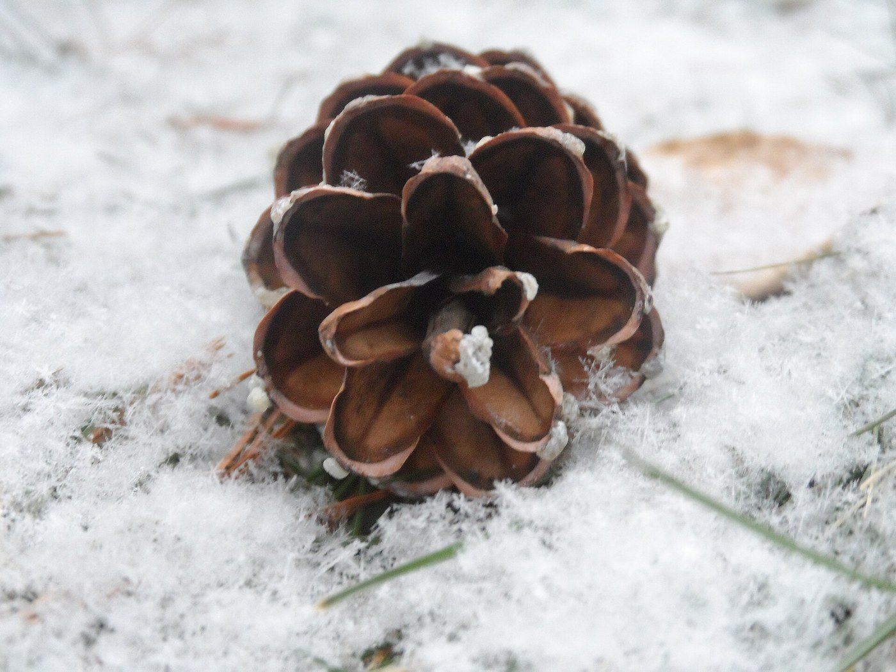

アクセス
場所のご案内
確認できているのは所在地とInstagramのみです。そのほかは準備中です。
| 所在地 | 〒879-5102 大分県由布市湯布院町川上３０３７−１７ |
|---|---|
| 電話 | 準備中 |
| 営業時間 | 準備中 |
| 定休日 | 準備中 |
| ご予約 | 準備中 |
| 駐車場 | 準備中 |
| SNS | Instagram @yufuinmanamana |
ギャラリー(イメージ)
写真のイメージ





写真はフリー素材のイメージです。お店のものではなく、この地域を写したものでもありません。